Wissen abrufen.
Sofort.
Der Corporate Brain durchsucht historische Daten semantisch und liefert bei Abweichungen sofort Lösungsvorschläge — inklusive automatisch generiertem Bericht.

Wertvolles Wissen verschwindet in alten Dokumenten und Berichten. Der Corporate Brain macht es sofort abrufbar — für jeden Mitarbeiter, zu jeder Zeit.
Drei Kernvorteile
Semantische Suche
Der Agent durchsucht alle historischen Berichte, Protokolle und Dokumente bedeutungsbasiert — auch wenn Formulierungen abweichen oder Synonyme verwendet wurden.
→ Trifft auch bei 70% abweichender Formulierung
Automatische Berichte
Strukturierte Berichte mit Befund, Lösungsvorschlägen und Quellenverweisen werden automatisch generiert — in Sekunden statt Stunden.
→ 80% weniger Zeit für Berichterstellung
Muster erkennen
Erkennt wiederkehrende Abweichungen und schlägt systemische Maßnahmen vor — bevor sich Probleme häufen oder eskalieren.
→ Proaktive Qualitätssicherung statt Reaktion
Ihr Tool nicht dabei? Wir integrieren uns in nahezu jeden Stack.
Wie es funktioniert
Der Agent in Aktion
Abweichung gemeldet
Eine Meldung oder ein Problem wird in das System eingegeben — über ValueStreamer oder eine andere angebundene Plattform.
Semantische Suche
Der Agent durchsucht alle historischen Berichte, Protokolle und Dokumente semantisch — findet auch Fälle, die anders formuliert wurden.
Ähnliche Fälle gefunden
Relevante frühere Fälle werden nach Ähnlichkeit gerankt und mit ihrer damaligen Lösung sowie der Erfolgswahrscheinlichkeit dargestellt.
Lösungsvorschlag generiert
Ein strukturierter Bericht mit Befund, konkreten Lösungsschritten und Quellenverweisen wird automatisch generiert und bereitgestellt.
Ergebnisse
Was Sie gewinnen
weniger Lösungszeit
weniger Wiederholungsfehler
weniger Berichtszeit
Funktionen
Was der Agent für Sie tut
Semantische Suche
Durchsucht historische Berichte, Dokumente und Lösungsdaten bedeutungsbasiert — auch wenn Formulierungen abweichen oder Synonyme verwendet wurden.
Ähnlichkeits-Matching
Findet ähnliche Fälle auch dann, wenn andere Begriffe oder Beschreibungen verwendet wurden — robust gegenüber verschiedenen Schreibweisen und Fachbegriffen.
Lösungsvorschlag mit Wahrscheinlichkeit
Rankt gefundene Lösungen nach Ähnlichkeit und gibt eine Erfolgswahrscheinlichkeit an — Ihr Team sieht sofort, welche Option am vielversprechendsten ist.
Automatische Bericht-Generierung
Erstellt automatisch einen strukturierten Bericht mit Befund, Lösungsvorschlägen und Quellverweisen — in Sekunden statt Stunden.
Trend-Analyse
Erkennt wiederkehrende Abweichungen und schlägt systemische Maßnahmen vor — bevor sich Probleme häufen oder eskalieren.
Integration in bestehende Systeme
Direkte Anbindung an ValueStreamer und weitere bestehende Systeme — keine manuelle Datenpflege, keine doppelte Arbeit.
Bereit für intelligentes Wissensmanagement?
Lassen Sie uns besprechen, wie der Corporate Brain Ihr Unternehmenswissen zugänglich macht — und wie viel Lösungszeit Sie damit einsparen.
Jetzt anfragen →15 Min · Kostenlos · Unverbindlich